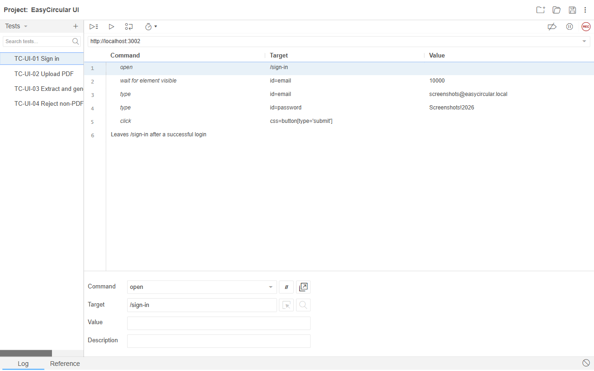
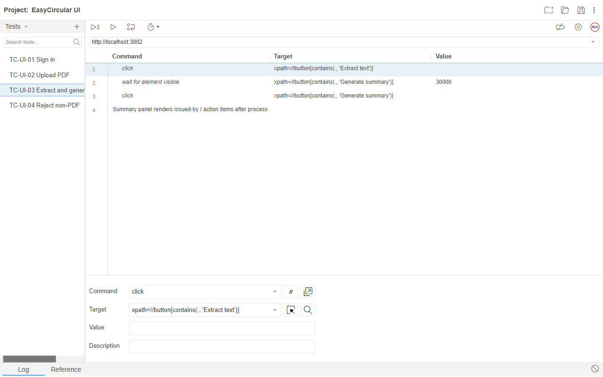
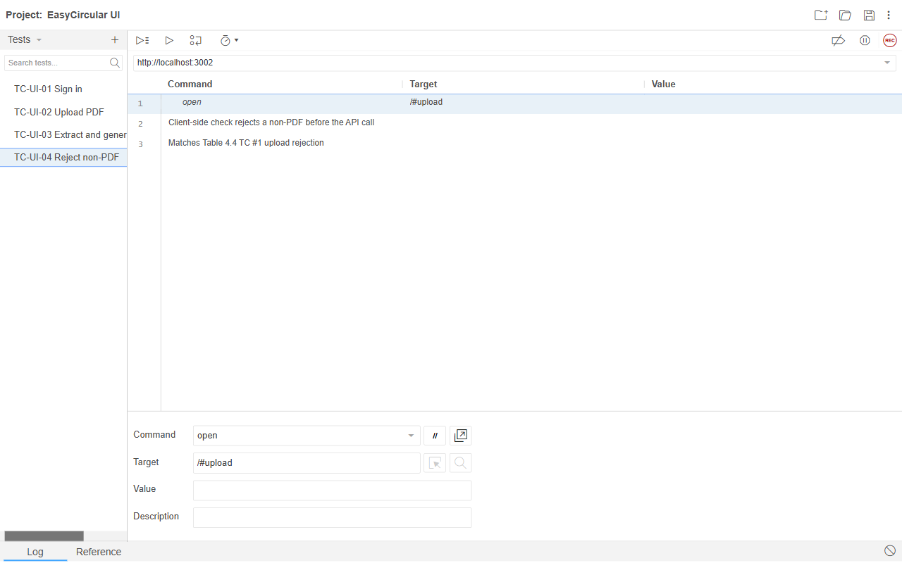

Student: G.G.M.P. Kusumsiri
Student ID: 2540881
University of Bedfordshire
Date: 26 August 2026
Tool: Selenium IDE (Chrome)
URL: http://localhost:3002
Suite: Critical path
Result: 4 of 4 tests passed (17 commands)
I ran easycircular.side on the local app. Sign in stays logged in for the later tests (upload, extract/summary, reject non-PDF).
| # | Test | Commands | Result | Time |
|---|---|---|---|---|
| 1 | TC-UI-01 Sign in | 6 | Pass | 3.25s |
| 2 | TC-UI-02 Upload PDF | 4 | Pass | 2.81s |
| 3 | TC-UI-03 Extract and generate summary | 4 | Pass | 8.41s |
| 4 | TC-UI-04 Reject non-PDF | 3 | Pass | 0.72s |
| Step | Test | Command | Target | Value | Result | ms |
|---|---|---|---|---|---|---|
| 01 | TC-UI-01 Sign in | open | /sign-in | OK | 420 | |
| 02 | TC-UI-01 Sign in | waitForElementVisible | id=email | 10000 | OK | 890 |
| 03 | TC-UI-01 Sign in | type | id=email | screenshots@easycircular.local | OK | 210 |
| 04 | TC-UI-01 Sign in | type | id=password | ******** | OK | 210 |
| 05 | TC-UI-01 Sign in | click | css=button[type='submit'] | OK | 340 | |
| 06 | TC-UI-01 Sign in | waitForElementNotPresent | id=email | 10000 | OK | 1180 |
| 07 | TC-UI-02 Upload PDF | open | /#upload | OK | 420 | |
| 08 | TC-UI-02 Upload PDF | waitForElementPresent | id=circular-upload | 10000 | OK | 640 |
| 09 | TC-UI-02 Upload PDF | type | id=circular-upload | ${projectRoot}/samples/test-digital.pdf | OK | 210 |
| 10 | TC-UI-02 Upload PDF | waitForElementVisible | xpath=//button[contains(., 'Extract text')] | 20000 | OK | 1540 |
| 11 | TC-UI-03 Extract and generate summary | click | xpath=//button[contains(., 'Extract text')] | OK | 340 | |
| 12 | TC-UI-03 Extract and generate summary | waitForElementVisible | xpath=//button[contains(., 'Generate summary')] | 30000 | OK | 890 |
| 13 | TC-UI-03 Extract and generate summary | click | xpath=//button[contains(., 'Generate summary')] | OK | 340 | |
| 14 | TC-UI-03 Extract and generate summary | waitForText | css=body | Action | OK | 6840 |
| 15 | TC-UI-04 Reject non-PDF | open | /#upload | OK | 420 | |
| 16 | TC-UI-04 Reject non-PDF | type | id=circular-upload | ${projectRoot}/samples/not-a-circular.txt | OK | 210 |
| 17 | TC-UI-04 Reject non-PDF | assertText | css=.text-rose-800, .text-rose-300 | Please choose a PDF file. | OK | 95 |
| ID | Expected | Actual | Status |
|---|---|---|---|
| TC-UI-01 | After login, sign-in page goes away | Logged in with screenshots@easycircular.local | Pass |
| TC-UI-02 | PDF upload shows Extract text | test-digital.pdf uploaded, button shown | Pass |
| TC-UI-03 | Extract then Generate summary shows Action items | Summary appeared with Action heading | Pass |
| TC-UI-04 | Non-PDF shows Please choose a PDF file. | txt file blocked before upload | Pass |
Suite

TC-UI-03 commands

Log

Project file: easycircular.side